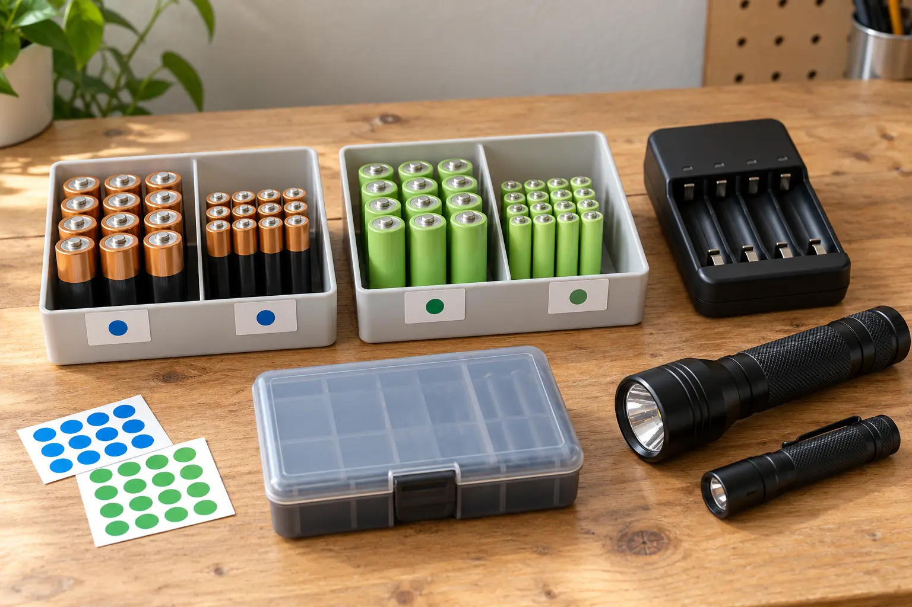

Alkaline primary
Fits: permitted low-drain devices, long untouched backup intervals and easy replacement. Tradeoff: single use, leakage risk and repeated purchases.
GEAR SYSTEM · AA/AAA · FIELD LIGHTS + RADIOS
The expensive mistake is not choosing the wrong winner. It is mixing chemistries, losing matched sets and discovering the dead cells after dark.

Before buying batteries, list every family field device that uses AA or AAA cells: headlamps, flashlights, radios, camera, weather receiver and toys. For each device, record the required size, chemistry or voltage restrictions, number of cells, orientation and whether the maker permits rechargeable NiMH. A battery that physically fits is not automatically compatible. Devices with low-voltage cutoffs or battery gauges may behave differently by chemistry.
A battery case is organization, not a fireproof vault. Use the manufacturer’s storage limits, keep cells dry and away from loose keys or metal objects, and do not put damaged batteries back into circulation. The conceptual hero image shows a sorting idea, not approved storage for every chemistry.
A charger’s slots are not a chemistry test. The Energizer charger instructions cited below say to charge only NiMH rechargeable batteries in that specific charger and warn against mixing used or other battery types. Use the exact charger manual for the model you buy. Verify supported chemistry, cell size, permitted cell count or pairing, indicators, power input, placement and fault behavior. Do not buy an unlabeled charger because its opening accepts AA.
For a family system, independent channel monitoring can reduce set confusion, but only the maker’s manual tells you what the charger actually does. A screen is not proof of a recognized safety listing, a proper termination method or compatibility. Confirm the exact model and current instructions before purchase.
Connect this system to the family lighting guide, walkie-talkie guide and weather-radio guide. Those pages choose the device. This page stops the batteries from becoming the failure point.
EPA says management depends on chemistry. It recommends recycling used alkaline and zinc-carbon cells or checking the local solid-waste authority, even though household trash may be allowed in many communities. EPA says not to put lithium single-use, button/coin or rechargeable batteries in household trash or municipal recycling; those need separate collection. Protect terminals or bag cells as the guidance requires. New York families should verify the current county or municipal route rather than copying another state’s rules.
If a battery is hot, swollen, leaking, smoking or damaged, move people away and follow the manufacturer and local emergency guidance. Do not handle a serious battery incident as a sorting chore.
Keep using a permitted primary-cell system when a low-use emergency device’s manual, storage plan or maintenance schedule makes that the better controlled choice. Skip rechargeable NiMH when nobody will maintain matched sets or follow the charger manual. Skip this entire framework for proprietary packs, power banks, vehicle batteries, coin cells and built-in lithium-ion devices.
MAKE THE DAY COUNT
Build the plan your family can finish well, then leave enough energy for the next part of the day.
More family plansTHE USEFUL STUFF
These are practical categories to compare—not a reason to overpack. Check fit, specifications and current reviews before buying.
Paid links: As an Amazon Associate I earn from qualifying purchases. You pay no additional cost.
Use only where the device manual permits NiMH, then keep same-age cells in labeled matched sets and follow exact charge instructions.
See current options → COMPARE ON AMAZONVerify supported chemistry, cell sizes, indicators, input, fault behavior and the exact model manual before charging anything.
See current options → COMPARE ON AMAZONChoose a dry case that keeps sizes, chemistry and charge state separate; it is organization, not a fireproof vault.
See current options →